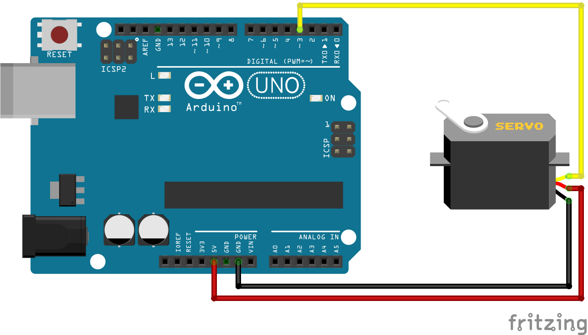
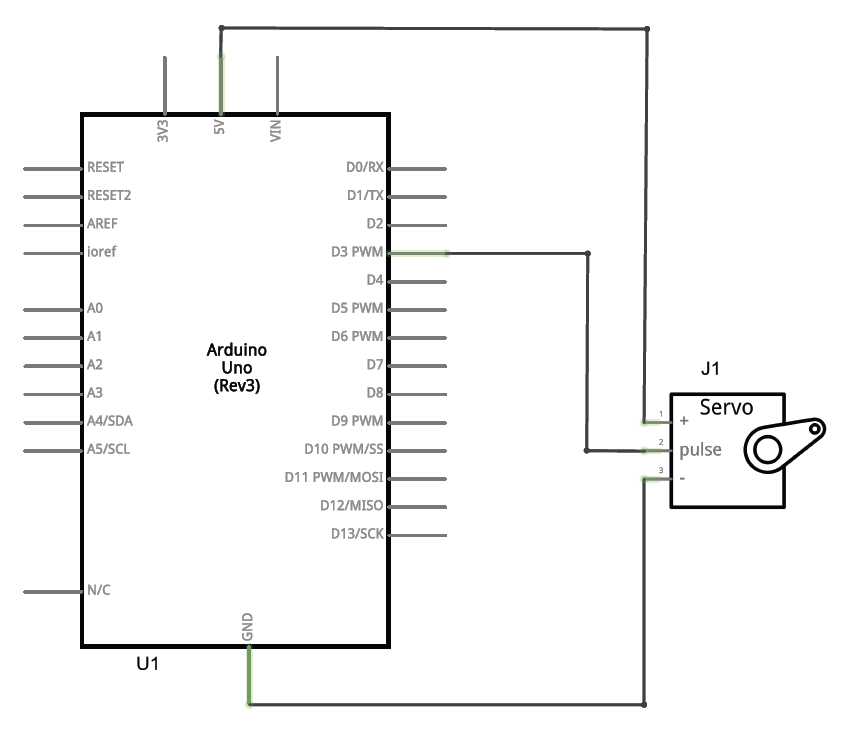

1. Servomotor¶
A servo motor is an electric motor that can rotate to a desired angular position and remain stable at that position.

A servo motor can rotate a mechanical component or move an element linearly.
Typical applications that use servo motors are:
- Air conditioning panel damper
- Turning the direction of a radio controlled vehicle.
- Movement of the reading head of a CDROM or DVD reader.
- Automatic movement of the rear view mirror of a car.
- Opening and closing a safe with an electronic lock.
Functioning¶
To move a servomotor it is necessary to connect it to an electrical power supply and send it an electronic signal that indicates the desired position. Most radio control servomotors have a 3-wire connection cable through which the power supply and the control signal circulate.
Internal composition:
Video on YouTube from a manufacturer, which explains the composition and internal operation of a servo motor
Internally, the servomotor is made up of the following components.
- Electric motor.
- Mechanical reducer.
- Position sensor. It is usually a potentiometer.
- Control circuit.
The motor is the element that produces the movement.
The rotation of electric motors is usually very fast and with little force, the mechanical reducer manages to reduce the rotation speed and increase the force, so that the final rotation is more useful.
The position sensor allows knowing the exact position of the axis of rotation of the servomotor. With the sensor, the position of the axis can be corrected so that at all times it is in the desired position.
The control circuit receives the desired position signal via the cable and compares it with the actual position of the axis, measured by the sensor. This circuit is responsible for moving the motor to take the axis to the desired position and keep it in that position. Sometimes the servo motor shaft seems to shake. This is due to the control circuit that continuously corrects the position with clockwise and counterclockwise rotations to keep the final position stable.
Specifications¶
There are many types of servo motors. As an example, the specifications of a small Tower Pro 9g servo motor are shown.
- Supply voltage = 4.8 to 6.0 v
- Maximum current = 570 to 730 mA
- No-load moving current = 170 to 270 mA
- Rotation angle = 0 to 180º
- Twist force = 1.8 kg-cm at 4.8v
- Turning speed = 180º in 0.36 s
- Weight = 9 grams
- Precision = 10us = 1.8º
Most servomotors allow turning angles of less than 180º. In the following video you can see the operation of the servomotor, its speed of rotation and its range of action. In an oscilloscope image you can also see the electronic signal that controls the servo motor.
- Vídeo: RC servo processor.
Connection scheme¶
The following schematic shows how to connect a servo motor to the Arduino UNO board.
 {kind=link}
{kind=link}
It must be taken into account that the Hitec system of colors and connections has been used to make this scheme. Other servo motors have a different color scheme and even connections in a different order.

Control program¶
The control library for servo motors comes standard with the Arduino environment. Its name is <Servo.h>
In the following example, the Servo.h library is used to move a servomotor connected to digital pin 3, to two extreme positions every half second.
1 2 3 4 5 6 7 8 9 10 11 12 13 14 15 | // Programa de prueba para mover un servomotor a dos posiciones.
#include <Servo.h>
Servo myservo; // Crea un objeto de tipo servomotor llamado myservo
void setup() {
myservo.attach(3); // Conecta el servomotor al pin digital 3
}
void loop() {
myservo.write(0); // Mueve el servomotor a la posición de 0 grados
delay(500); // Espera medio segundo
myservo.write(180); // Mueve el servomotor a la posición de 180 grados
delay(500); // Espera medio segundo
}
|
Exercises¶
Complete the following program that slowly moves the servo motor between two different positions.
1 2 3 4 5 6 7 8 9 10 11 12 13 14 15 16 17 18 19 20 21 22 23 24 25 26 27
// Mueve el servomotor conectado al pin digital 3 // lentamente entre dos posiciones distintas #include <Servo.h> Servo myservo; // Crea un objeto de tipo servomotor llamado myservo void setup() { myservo.attach(3); // Conecta el servomotor al pin digital 3 } void loop() { // Mueve lentamente el servomotor desde 0 hasta 180 int angle = 0; while(angle < 180) { myservo.write(angle); // Mueve el servomotor a la posición 'angle' delay(20); // Espera 20 milisegundos angle = angle + 2; } // Mueve lentamente el servomotor desde 180 hasta 0 }
Make a modification to the previous program so that the servo motor moves slowly from the 0 degree position to the 180 degree position. Once that movement is finished, you should quickly return to the 0 degree position. Fast movement can be achieved by reducing the delay() timeout or by increasing the angle of rotation further in the angle = angle + 2 statement.
It must be taken into account that the servomotor takes approximately 360 milliseconds to return to its initial position. The total time scheduled for the movement should not be less.
Write a program that moves a servomotor to the 0 degree position by pressing button 1 and that moves the servomotor to the 90 degree position by pressing button 2.
Additional features¶
- Explanation in English of the operation of a servomotor
- How Servo Motors Work & How To Control Servos using Arduino